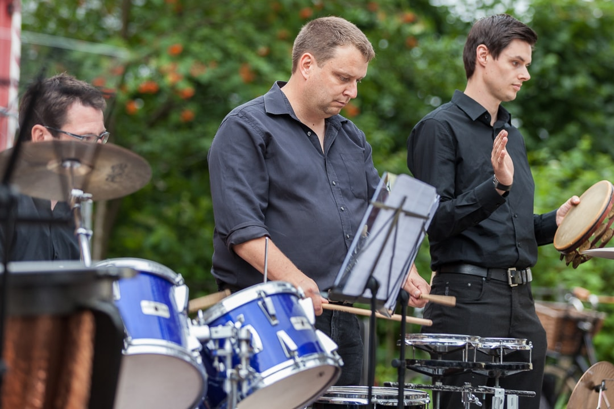
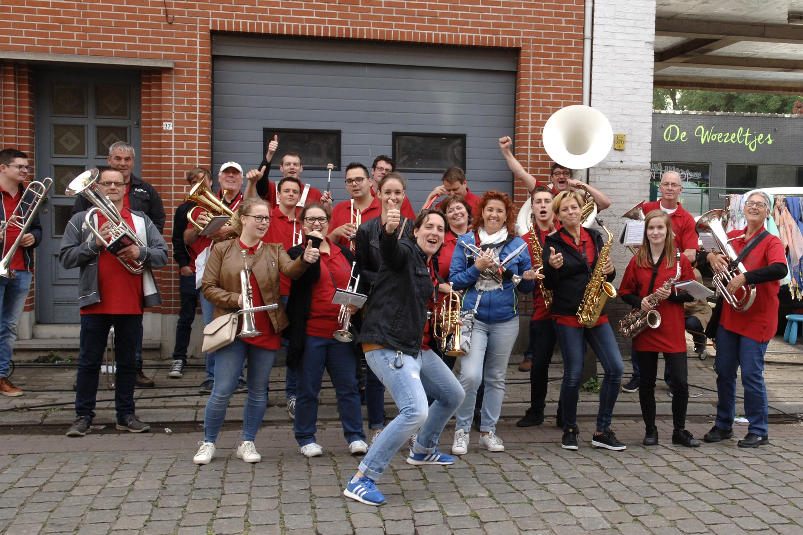

Fanfare

Ons fanfareorkest, bestaande uit zo’n 35 enthousiaste muzikanten, staat sinds juni 2016 onder leiding van de jonge en gedreven dirigent Richard Schroevers. Onze fanfare bestaat uit mensen van alle leeftijden, soorten en maten. Allemaal hebben ze de drive om samen, op een voor iedereen prettig niveau, muziek te maken. Plezier in en passie voor de muziek staan altijd voorop! Fanfaremuziek oubollig? Absoluut niet: onze fanfare gaat volop met zijn tijd mee. Van originele fanfaremuziek tot filmbewerkingen, van ‘poppy’ muziek tot ‘jazzy’ arrangementen en hier en daar ook een flinke vleug klassiek: alles komt voorbij tijdens onze optredens. Ook de stijl van onze optredens is helemaal van deze tijd: zo hebben we in oktober 2016 een veelzijdig optreden gegeven met zangeres Liza Meuldijk, en op zaterdag 21 oktober aanstaande zullen we een spetterend concert verzorgen met de bekende musicalzangeres Maike Boerdam! De wekelijkse repetities vinden plaats op zaterdagavond tussen 19:00 en 21:15 uur. Voel je vooral welkom om eens te komen luisteren en kijken!
WDV Percussion
WDV Percussion staat al sinds begin jaren 90 onder leiding van Luc van Hoorick en is in die tijd uitgegroeid van klein maar fijn percussie-ensemble tot een heus, volledig zelfstandig percussieorkest van steeds gemiddeld 15 tot 20 leden. Van melodisch slagwerk tot drums, van de grote pauken tot het kleinste cymbaaltje: WDV Percussion is in staat om met deze instrumenten een veelzijdig concertprogramma te verzorgen. Hippe, moderne percussiemuziek, afgewisseld met originele composities voor slagwerkorkest en popsongs: WDV Percussion speelt het allemaal. WDV Percussion is niet in de laatste plaats bekend van de tweejaarlijkse ‘Masters of Percussion’. Voor het eerst georganiseerd in 2012 en inmiddels een gevestigde concertavond geworden in onze regio. In 2016 was Triggerfinger-drummer Mario Goossens nog te gast als gastartiest. We repeteren iedere maandagavond tussen 20:00 uur en 21:30 uur. Wees vrij om eens te komen luisteren en kijken naar ons veelzijdig slagwerkorkest!
Amusementsband
Voor wie houdt van een feestje, is er onze Amusementsband onder leiding van Daniëlle Stienen. Nu wil het toeval dat de meeste WDV’ers feestjes niet snel zullen overslaan, dus je raadt het al: als de voetjes van de vloer en de handjes in de lucht moeten, is dit orkest van de partij. Het leuke van deze groep is, dat ieder lid mee kan doen: of iemand nu in de fanfare speelt, percussionist is bij WDV Percussion of nog volop muziek aan het leren is: iedereen is welkom. Carnaval, dweildagen, braderijen, verjaardagen, noem het maar op: wij draaien er ons hand niet voor om. Van ongezouten carnavalskrakers tot pop- en rockmedleys: we zetten er onze muzikale tanden in. Feeststemming gegarandeerd. Dus heb je binnenkort een (dorps)feest, kermis of braderij op de agenda staan: denk ook eens aan WDV AB! Meer info over al onze onderdelen kun je opvragen bij onze secretaris Bas Weemaes: secretaris@fanfarewdv.nl
Muzieklessen

Weldoen door Vermaak vindt het belangrijk dat al haar leden goed muziekonderwijs aangeboden krijgen. We hebben daarom een aantal mensen binnen onze vereniging die (beginnende en meer gevorderde) leerlingen wegwijs maken op de verschillende instrumenten. Benny Stienen verzorgt de theorielessen. Hij laat de beginnende muzikanten kennis maken met de theoretische aspecten van (fanfare)muziek en leidt hen op voor theorie-examens. Daniëlle Stienen onderwijst onze koperblazers. Zo geeft zij les (en heeft zij les gegeven) aan onder meer bugelspelers, trompettisten en zwaar-koperblazers. Luc van Hoorick en Stijn Ivens leren de percussionisten de kneepjes van het vak. Zij hebben drummers, melodische slagwerkers en percussionisten van alle pluimage onder hun hoede. Tijd en locatie van de lessen worden altijd in onderling overleg met de docenten bepaald. Daarnaast zijn we in mei 2017 gestart met een muziekproject op onze plaatselijke basisschool. Dit in nauwe samenwerking met de Zeeuwse Muziekschool en Basisschool Sint Bernardus. Leerlingen in de groepen 5 tot en met 8 maken, onder leiding van een professioneel docent van de muziekschool, voor het eerst kennis met fanfare-instrumenten. De eerste lichting jonge muzikantjes heeft op 13 mei 2017 een eerste muzikale stap gezet door samen met ons groot fanfareorkest op te treden op het Lenteconcert!
Bestuursleden
| Edwin van den Berghen | Voorzitter |
|---|---|
| Ingmar Ivens | Penningmeester |
| Bas Weemaes | Secretaris |
| Hans van Hoorick | Algemeen bestuurslid |
| Frans Pilaet | Algemeen bestuurslid |